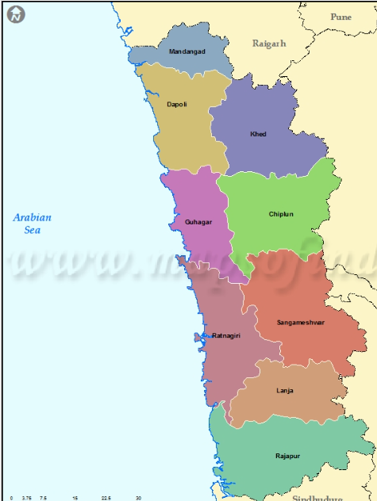

Welcome to Ratnagiri
9 Districts to Explore
48+ Beaches on the Konkan Coast
300+ Ancient Temples
Home of the World-Famous Alphonso Mango
Best Season to Visit: October to February
Hover over the map to explore districts

Visit District